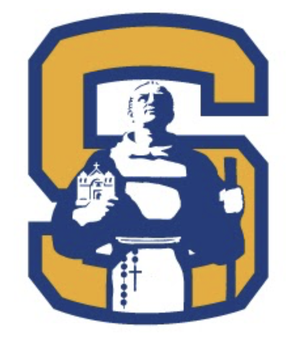

Junipero Serra High School
- 4.0 GPA Student
- Principle's List All Semester's HS Career
- Student Ambassador (2021-2023)
- Co-Founder Serra Aviation Club
- National Honor Society Member
- National Honor Society Service Chair
- Varsity Baseball Team Captain
- Outstanding Student Award (2022)
- Tom Thompson San Mateo Rotary Club Scholarship
- California Scholarship Federation Awardee